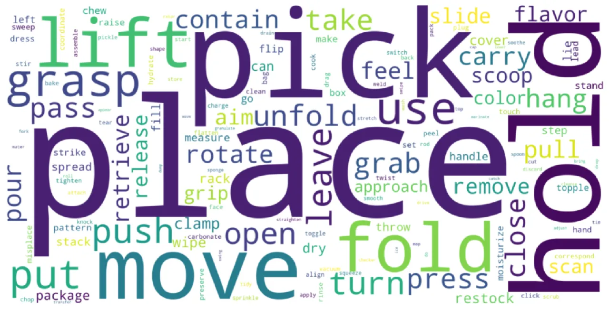
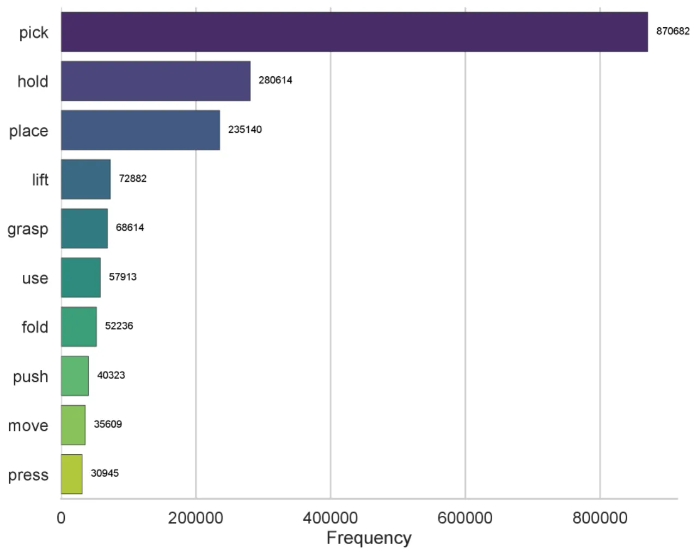
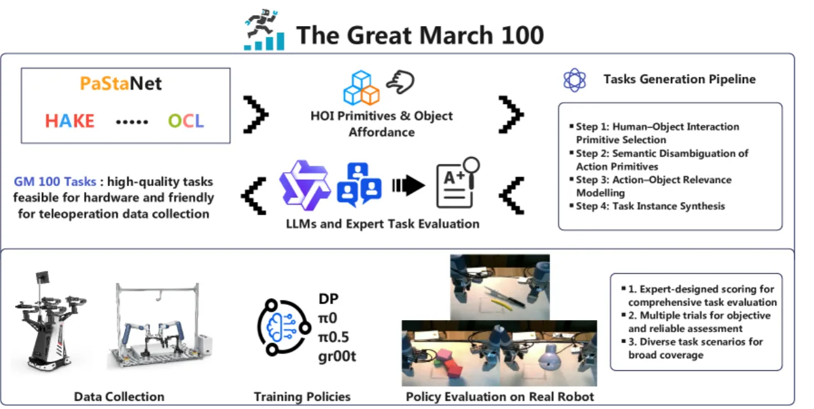
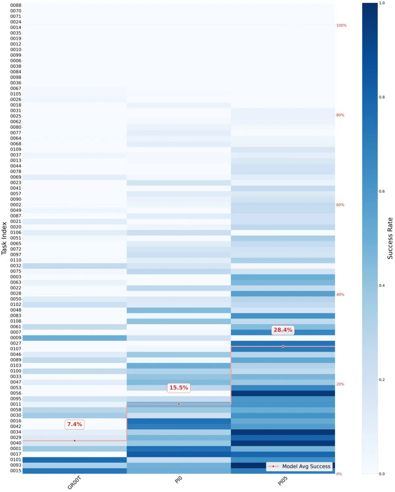
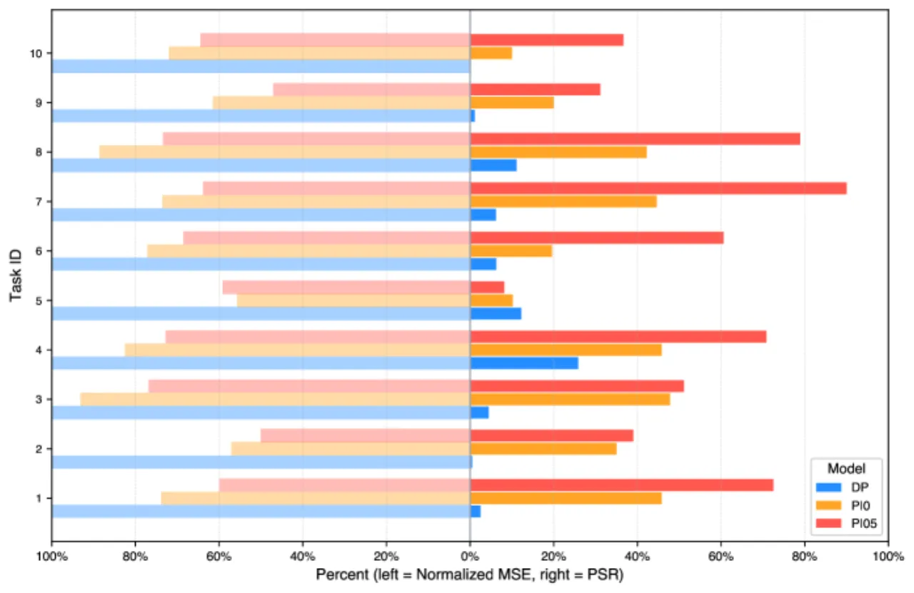

GM-100 提出 100 个精细设计的机器人操作任务，通过系统分析现有数据集的任务偏差，结合人体-物体交互原语（HAKE）和大语言模型扩展，构建覆盖长尾行为的多样化评估基准，用以区分不同 VLA 模型的真实能力。
当前机器人学习数据集的任务设计缺乏系统性原则，大量工作集中在少数常见动作（如"pick and hold"），无法有效区分和衡量不同方法的真实能力。
"Do the current datasets and task designs truly advance the capabilities of robotic agents? Do evaluations on a few common tasks accurately reflect the differentiated performance of various methods proposed by different teams and evaluated on different tasks?"

现有数据集存在"重叠过多、设计随意"的问题——不同团队在各自不同的任务上评估自己的方法，缺乏统一的多样化测试集，难以做到横向对比。GM-100 的目标是成为机器人学习领域的"Olympics"：提供标准化、多样化、且具有足够难度的任务集合，让不同方法在同一赛场上同台竞技。
GM-100 的任务构建遵循"分析现有任务→LLM 语义扩展→混合过滤→专家筛选"的完整流水线，结合人体-物体交互原语数据库（HAKE、OCL）引入丰富的长尾行为。

收集 Agibot 和 π₀.₅ 等公开数据集中的现有机器人任务，去除重复项并进行语义归类，通过词云和动词频率分布可视化任务偏差，识别哪些交互类型在现有数据集中过度代表或严重缺失。
以 Qwen3 模型为基础，设计精心构造的 prompt，融入来自 HAKE 和 OCL 数据库的人体-物体交互原语（human-object interaction primitives）与物体功能可供性（object affordances），生成候选任务列表，重点覆盖长尾行为——即现有数据集中出现频率极低的复杂操作。
候选任务经过三级过滤：(1) 词义消歧（word sense disambiguation）去除歧义任务；(2) LLM 自动评分——对每个任务的硬件可行性和数据采集友好性进行打分；(3) 5 位人类专家进行人工验证，最终按综合得分优先级选出 100 个任务，并为每个任务配备详细的交互标准说明和模板视频。
每个任务收集 100 条带有不同初始条件和扰动设计（varying initial conditions and design perturbations）的轨迹，确保位置、朝向和物体摆放的多样性；另外再采集 30 条分布相近的测试轨迹。前 10 个任务在两个平台上各采集 130 条轨迹；任务 11–100 仅在 Cobot Magic 平台上采集。全部数据共超过 13,000 条轨迹。

在两个真实机器人平台上对三个基线模型（DP、π₀、π₀.₅）进行评估，使用 Partial Success Rate（PSR）和 Success Rate（SR）两个指标衡量性能。
| 任务 | PSR – DP | PSR – π₀ | PSR – π₀.₅ | SR – DP | SR – π₀ | SR – π₀.₅ |
|---|---|---|---|---|---|---|
| Task 0001 | 2.5% | 45.8% | 72.5% | 0.0% | 13.3% | 36.7% |
| Task 0002 | 0.5% | 35.0% | 39.0% | 0.0% | 0.0% | 8.0% |
| Task 0003 | 4.4% | 47.8% | 51.1% | 0.0% | 0.0% | 0.0% |
| Task 0004 | 25.8% | 45.8% | 70.8% | 3.3% | 0.0% | 30.0% |
| Task 0005 | 12.2% | 10.2% | 8.2% | 12.2% | 10.2% | 8.2% |
| Task 0006 | 6.3% | 19.6% | 60.6% | 0.0% | 0.0% | 13.3% |
| Task 0007 | 6.2% | 44.6% | 90.0% | 0.0% | 3.3% | 50.0% |
| Task 0008 | 11.1% | 42.2% | 78.9% | 0.0% | 6.7% | 66.7% |
| Task 0009 | 11.1% | 20.0% | 31.1% | 0.0% | 0.0% | 0.0% |
| Task 0010 | 0.0% | 10.0% | 36.7% | 0.0% | 10.0% | 36.7% |
| 平均 | 7.0% | 32.1% | 53.9% | 1.6% | 4.4% | 24.9% |
| 指标 | DP | π₀ | π₀.₅ |
|---|---|---|---|
| Average MSE | 0.0047 | 0.0033 | 0.0029 |
| Average L1 Loss | 0.0328 | 0.0252 | 0.0234 |


"Suboptimal robotic arm configurations for specific tasks, the wide distribution of collected datasets, and insufficient training data collectively contribute to low overall success rates on GM-100 benchmarks."（原文）机械臂配置欠优、数据分布宽泛、训练数据不足是当前成功率偏低的主要原因。这也意味着 GM-100 的完整解决仍需大量方法和数据上的改进。
"We do not aim to build an absolutely fair physical testing environment, as current robotic learning models remain significantly influenced by tester capability and environmental conditions."（原文）真实机器人测试高度依赖操作员水平和环境条件，难以做到完全受控的公平对比；"Real-world robot testing is highly costly"也限制了更大规模的实验。
作者明确指出 GM-100 是"the first step towards a robot learning Olympics"，当前 100 个任务仅代表第一版（v1）。未来版本可能扩展更多类别、引入更高难度的组合操作或需要工具使用的场景。任务 11–100 的真实环境评估结果尚未公开（受测试成本限制）。
完整的 100 个任务评估仅在 Agilex Cobot Magic 平台上进行，Dobot Xtrainer 只测试了前 10 个任务。不同平台（如单臂、人形机器人等）上的泛化性能尚未全面评估，限制了基准对更广泛硬件生态的代表性。